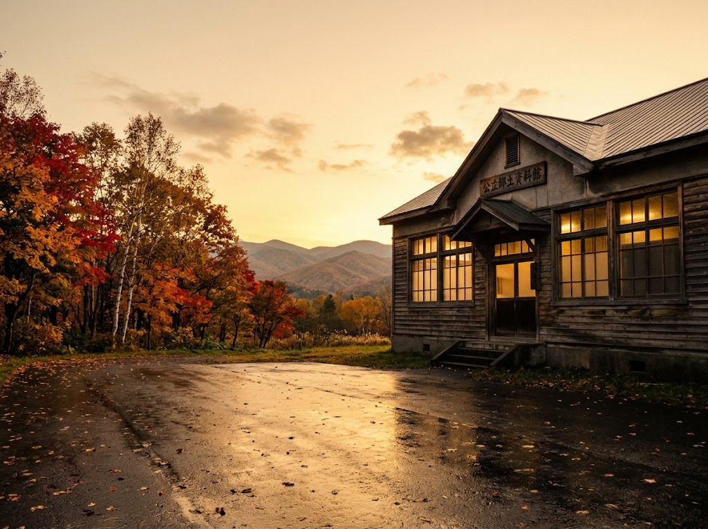
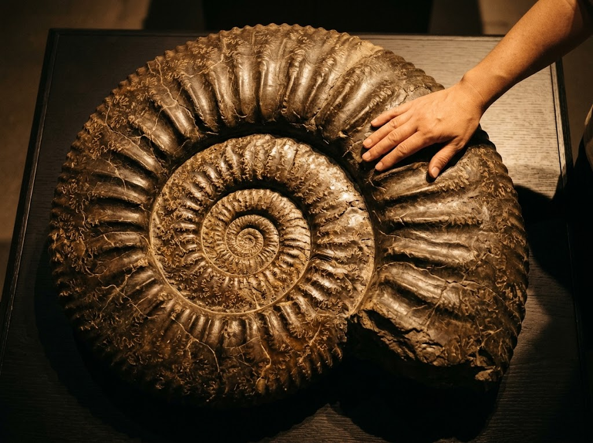
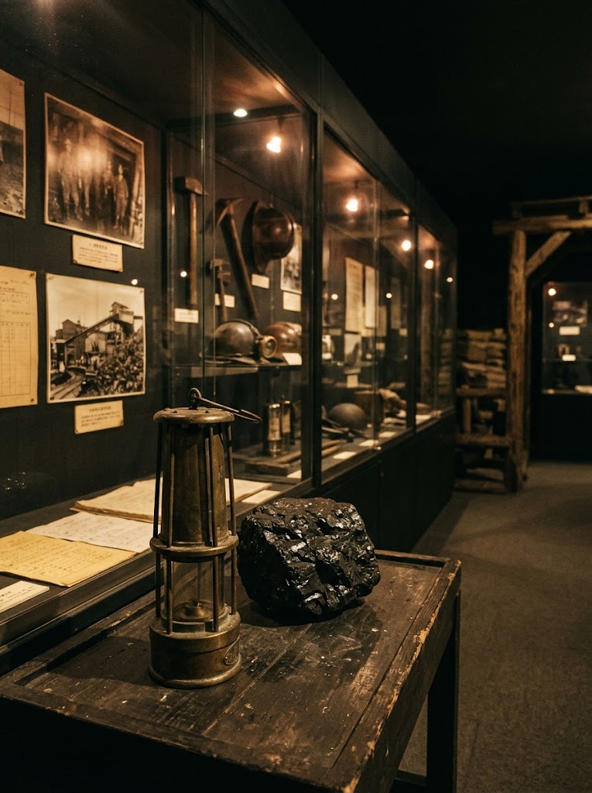

エゾミカサリュウの標本
1977年に文部省から天然記念物に指定されたエゾミカサリュウの標本を展示しています。当館ならではの見どころです。
三笠市立博物館

北海道三笠市。白亜紀の地層と炭鉱の歴史が眠る町の、総合博物館です。
三笠市立博物館は、郷土資料と自然史をあわせて紹介する総合博物館です。大地から掘り出された化石、そして石炭とともに歩んだ人々の暮らし。ゆっくりと時間をかけて巡りたい展示が揃っています。

北海道産のアンモナイト約600点を展示。直径50cmから130cmにもなる大きな標本が数多く並びます。しかもそれらに自由に触れられる、非常に珍しい展示です。
1977年に文部省から天然記念物に指定されたエゾミカサリュウの標本を展示しています。当館ならではの見どころです。
幌内炭鉱に関する展示や、三笠にゆかりのある人物の歩みも紹介。化石だけでなく、まちの産業史にも触れられます。
1979年、北海道三笠市によって設立されました。きっかけは1976年、市内の白亜紀の地層からウミトカゲ類の頭蓋骨化石が発掘されたことです。
この発見を機に、地域の自然史や歴史、産業史を保存し展示する必要性が高まり、郷土資料と自然史をあわせて扱う総合博物館として開館しました。

★★★★入館料450円。アンモナイトが大量に展示されてます。恐竜や三笠竜などの展示物があり、別の展示室に幌内炭鉱関係の展示物があり、働いていた人は空知集治監の囚人の人達。石炭が「黒いダイヤ」と言われていた頃ですね。国内でも使われてましたが、石狩川を経由して小樽港から海外に輸出していたんでしょうね。
それと、受付けの女性が信じられないくらい無愛想。市営とは言え少しくらい笑顔で対応しても良いかと思いました。それでマイナス1点。
★★★★★アンモナイトの展示、収蔵量日本一を誇る博物館。外観だけ見てたらすぐ見終わると思われましたが流石に見応えありました。幾多のアンモナイトはもちろん、蒐集家の方の特別展、三笠出身の二人の偉人の軌跡、石炭関連の展示などじっくり見てたら時間足りなくなるの請け合いです。
残念なのは，事前に調べて来ると３館共通券，冬場なら2館共通券の購入で割安にたっぷり三笠を楽しみ大いに三笠ファン作りに貢献するので案内板等に書かれているだけで無く積極的にPRすればいいのに勿体なと感じました。特に小さな美術館cielなどは共通券通してのファン作り大事だなと感じました。ちなみに3館共通券は鉄道記念館は冬季休業の10月15日まで，博物館とcieiは翌年3月31日まで有効なので複数日に分けて訪問も出来るそう。特別展料含めてもこれで850円。もっと知られて三笠ファン出来て欲しいなと思いました。
※ご来館者の口コミを掲載しています。